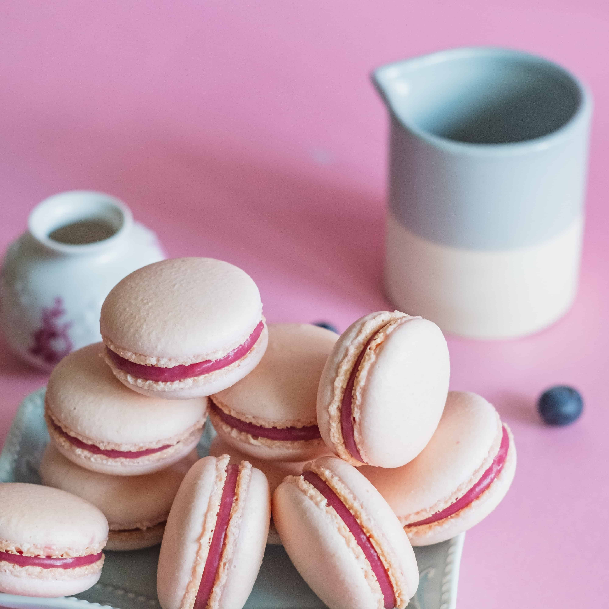
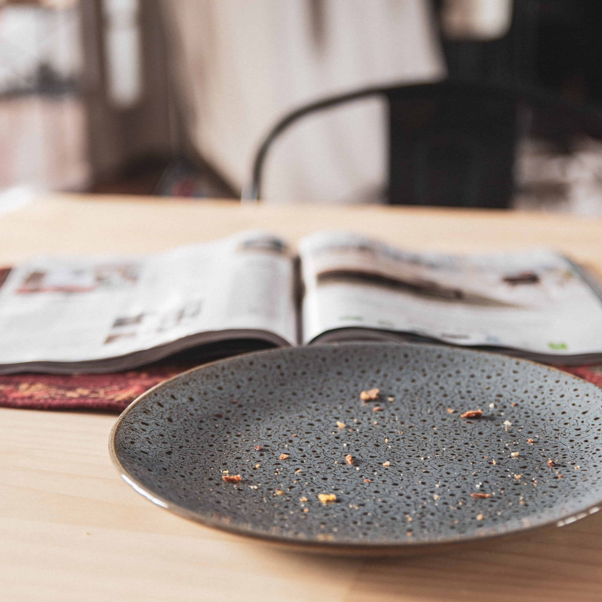
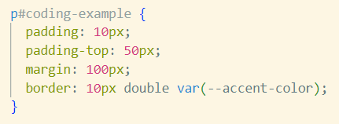

tech blog 1: unwrapping the box
A blog post on margins,
borders and
padding.
introduction
Ahhhhh, layouts and design in the box model. I have spent the last two
days wrestling with paddings and margins as my content rushed around the
page and all that freneticism could have been saved had I thought of
this simple analogy to remember what
margins,
borders and
padding are about.
Margins,
borders,
padding and
content make up the box model in CSS, and
whats the best kind of box, I ask? To which you reply, a Christmas
present, of course!
Working our way outside in as one does with any good present we will
discuss margins which are like the gaps
between multiple presents, borders which
are the pretty wrapping paper that seperates what is inside the present
from outside AND makes it look pretty,
padding which acts as the box which holds
the present and creates space around the present to protect it, and last
but least, content which we can thing of
as the present itself...
we finally made it, hurray!
margins
Like the gaps between presents,
margins help us to differentiate between
different areas of content by creating transparent gaps between them,
like the way we separate presents (as seen in the image above) so we can
see clearly distinguish what belongs to who and not get our gifts mixed
up (I don't know if my baby nephews socks would do me much good,
although I suppose he could wear my socks as a strange sort of hat)!
demo: no margins
Note (that I figured out while creating
this demo):
If you are using inline-block elements and are NOT using flex, make sure
there is no white space between your html elements if you do not want
ANY margin in between them!
demo: margins
These images each have an added margin of
20px.
padding
Padding is like a box which creates space
around our content, just as we might put a present in a box to stop it
from getting crushed. This space stops our content from getting crushed,
although, as we can see in the demo, adding
padding does shrink our content down if
we are using border-box for our box sizing (this would require a whole
other post to explain, so just take my word for it)!
As we can see if we compare our two demo images, if we add a lot of
padding to our content like the image on
the right, it's like the fun trick of putting a really small present
inside a really big box... so I might think I'm getting adult sized
socks when I see the packaging, when in fact, I am getting my baby
nephew's socks which are like a miniature copy of my own.
demo: no padding
demo: padding
content

Content is, you guessed it, the most
important part of the whole package. Without
content, would we have a gift at all?
Content is the real gift, not
just wrapping, or decoration or empty space. This is where the real
value lies, and it is the element that all the other properties exist to
enhance.
demo: content
demo: no content
...but for the sake of the analogy...

coding
Coding margins,
borders and
padding is fairly straight-forward. Each
can be refered to by a simple key word "margin", "border" or "padding".
Used alone, this keyword will control all four sides of an element,
however, "top", "bottom", "left" and "right"strong> may be adding before
the keyword to control a more specific value, e.g., "padding-top".
While margins and
padding are transparent,
borders demand a "border-width",
"border-style" and "border-color". These may be specified individually
or in shorthand, e.g. "border: 5px dashed green", will result in a
dashed green border with a width of 5 pixels.
this element has a padding-top of 50px with the rest having a padding of
10px, a margin of 100px and a 10px double border in the accent colour of
this web page

Thanks for reading my first blog post!